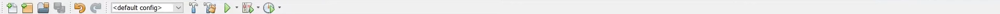

class Sip_Brief extends SIP {
public void Objectives()
{
if(Task 1.1 - Browser Setup) {
boolean Completed = 9/27/26;
String Description =
"Set up the Chrome extension framework, including manifest configuration
and basic file structure. Decisions will be guided by Chrome extension policy requirements
and scalability considerations.";
String[] Logs = {
9/12/26
"Read and review of several browser's extension creation policies. Ex: Google Chrome's extension program policies
https://developer.chrome.com/docs/webstore/program-policies/policies"
};
}
if(Task 1.2 - Management System) {
boolean Completed = 9/27/26;
String Description =
"Implement task creation, editing, and time tracking features using
JavaScript and browser storage APIs. Design decisions will prioritize clarity and minimal
user input.";
String[] Logs = {
9/19/26
"Added cross-browser extension popup that features basic task creation entry field and a list to display them.",
9/27/26
"Added core functionality to task creation and management.
This includes: task creation, deletion, edit task name, add/edit task due date, dedicated save changes button."
};
}
if(Task 2.1 - Distraction Detection) {
boolean Completed = 10/24/26;
String Description =
"Develop logic to detect user visits to predefined distraction websites
and trigger warnings or interventions accordingly.";
String[] Logs = {
10/9/26
"Added an interface that allows user to create/add new "distraction sites" in correspondence to the ability to display them.
In addition to this, allows for the deletion/removal of a "distraction site"",
10/24/26
"Completed distraction detection logic. The logic extends to being able to
detect when a user opens a distraction site (both new and to reopen) in addition to the stayed
away duration from said site(s)."
};
}
if(Task 2.2 - Intensity Controls) {
boolean Completed = 10/24/26;
String Description =
"Implement multiple intervention levels, allowing users to adjust how
aggressively the extension responds to distractions.";
String[] Logs = {
10/9/26
"Added an interface that allows the selection of multiple intervention levels.
This includes the option of a general ruleset and an individual site rulet. Currently, only
the general ruleset interface is functional.",
10/24/26
"Added logic that incorporates appropriate panels for each intensity level (whoms purpose matches intensity level description).
The notable examples of this are being able to pause access to sites and keep track of usage time (even including time away ans site tab closure)"
};
}
if(Task 3.1 - Interface Design) {
boolean Status = In Progress;
String Description =
"Design a clean and minimal user interface using HTML and CSS to ensure
ease of navigation and low cognitive load.";
String[] Logs = {
};
}
if(Task 3.2 - User Testing) {
boolean Status = In Progress;
String Description =
"Conduct informal usability testing to refine interface flow and feature clarity based on observed behavior.";
String[] Logs = {
};
}
}
}
